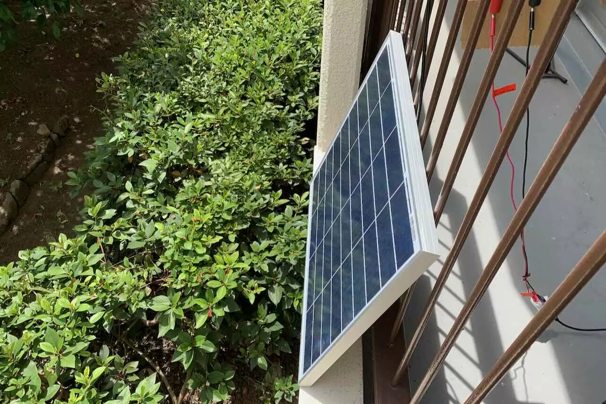
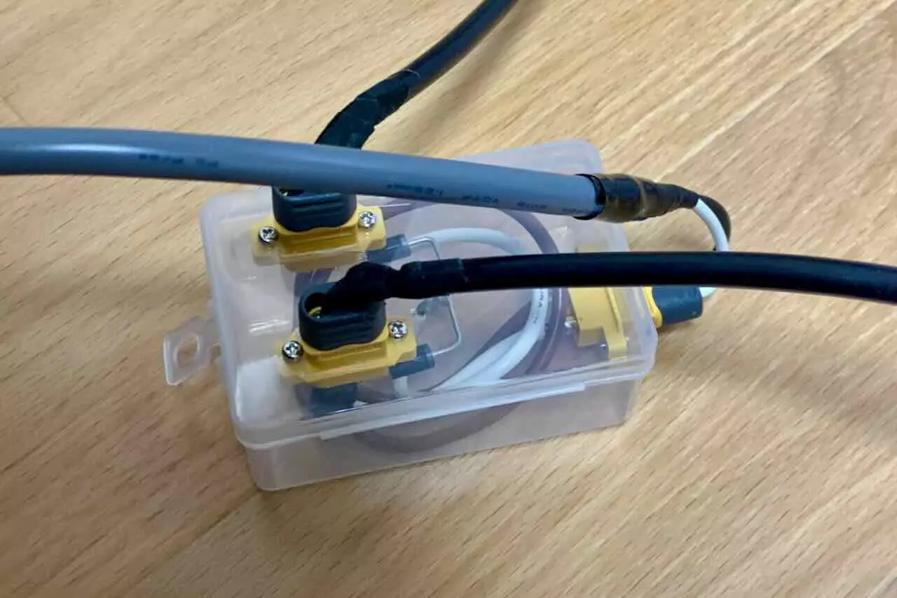
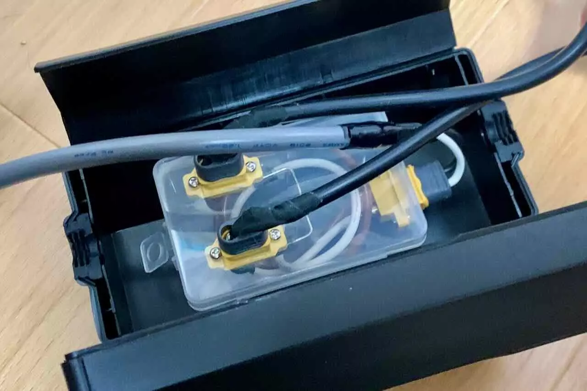
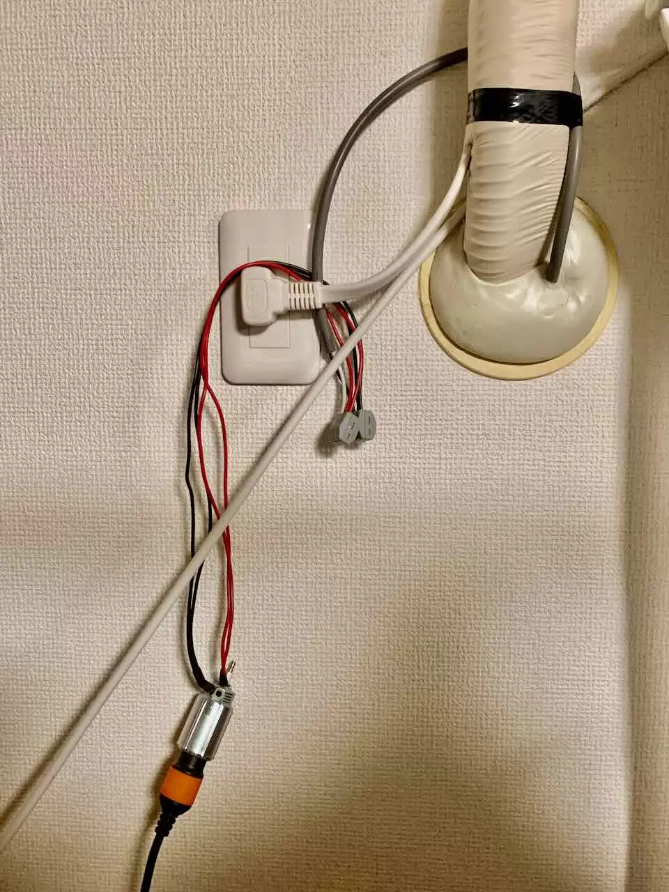
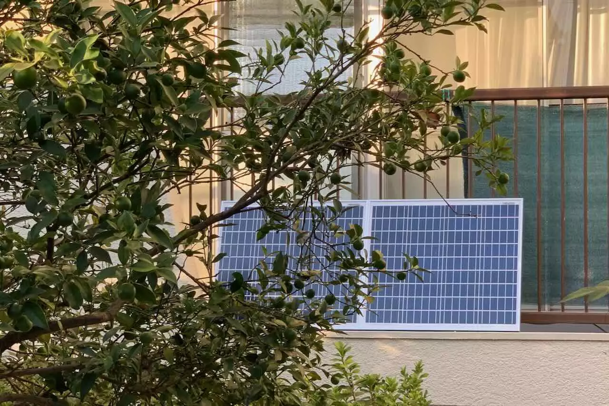
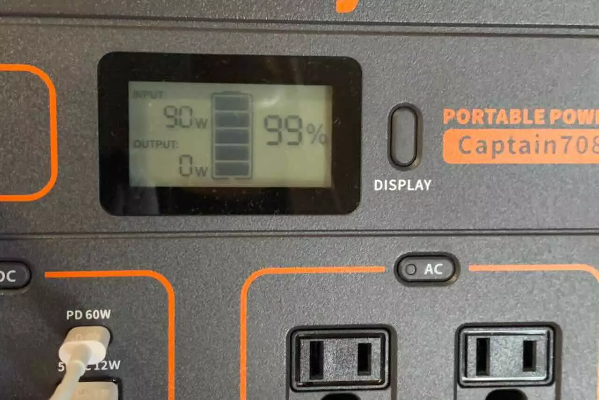

ベランダで太陽光から電気を取り出す練習
目的:
- 太陽光から充電し、そこからDC電源を取るためのノウハウを学ぶ
- 災害対策の一貫
要件:
- 設置が簡単であること（撤去が簡単であること）
ベランダでかつ簡易的に設置することを想定しているため、台風や強風を想定し、容易にしまえるようにしてみる。
Lv1. ソーラーパネル単体から電力を取り出す
秋月でお手軽なパネルを購入。
- 最大出力電力(Pmax)：50W
- 開放電圧(Voc) ：21.8V

Lv2. ソーラーパネルを並列接続して出力を上げる
ソーラーパネルを並列で接続する場合は、ダイオードで電流の逆流を防ぐようにする。
Amazonだとこういうもので接続するだけという感じですが、自作します。

これも秋月で購入。
これを適当なケースに納めました。

コネクタは個人的に運用が容易な XT60 を利用。


防水が必要なため、よさそうなケースをさらに導入。


Lv3. 屋外から屋内へケーブルを引き込む（簡易）
最大100Wと仮定すると、100/20=5(A)程度と想定。以下のケーブルを利用する。 屋外に引くことになるため紫外線の影響がでるが、一時的な設置なため、良しとする。
定格:300V 12A, 5m, 1.25m㎡×2心

太陽光パネルからとったケーブルをエアコンの配管穴を利用して通しておきます。 Jackeryへの接続のため、シガーソケットへ流せるように変換。

現状まとめ
 立て掛ける程度なため、太陽の方向を向いていない。
夏場は熱と太陽高度が高いことから、60-70W程度が限界。真冬のよく晴れた日で90W取れていた。 日中は Jackery のポータブル電源へ充電し、iPhoneの充電や、間接照明程度であれば維持できそう。



常時設置でなければ以下のパネルがおすすめ